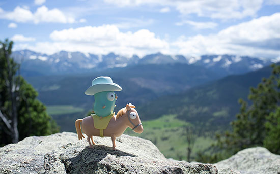

GopherCon 2015 Roundup
Andrew Gerrand
28 July 2015
A few weeks ago, Go programmers from around the world descended on Denver,
Colorado for GopherCon 2015. The two-day, single-track conference attracted
more than 1,250 attendees—nearly double last year's number—and featured 22
talks presented by Go community members.

The Cowboy Gopher (a toy given to each attendee) watches over the ranch.
Photograph by Nathan Youngman. Gopher by Renee French.
Today the organizers have posted the videos online so you can now enjoy the
conference from afar:
Day 1:
- Go, Open Source, Community — Russ Cox (video)
(text)
- Go kit: A Standard Library for Distributed Programming — Peter Bourgon
(video) (slides)
- Delve Into Go — Derek Parker (video)
(slides)
- How a complete beginner learned Go as her first backend language in 5
weeks — Audrey Lim (video)
(slides)
- A Practical Guide to Preventing Deadlocks and Leaks in Go — Richard
Fliam (video)
- Go GC: Solving the Latency Problem — Rick Hudson (video)
(slides)
- Simplicity and Go — Katherine Cox-Buday (video)
(slides)
- Rebuilding Parse.com in Go - an opinionated rewrite — Abhishek Kona
(video) (slides)
- Prometheus: Designing and Implementing a Modern Monitoring Solution in
Go — Björn Rabenstein (video)
(slides)
- What Could Go Wrong? — Kevin Cantwell (video)
- The Roots of Go — Baishampayan Ghose (video)
(slides)
Day 2:
- The Evolution of Go — Robert Griesemer (video)
(slides)
- Static Code Analysis Using SSA — Ben Johnson (video)
(slides)
- Go on Mobile — Hana Kim (video)
(slides)
- Go Dynamic Tools — Dmitry Vyukov (video)
(slides)
- Embrace the Interface — Tomás Senart (video)
(slides)
- Uptime: Building Resilient Services with Go — Blake Caldwell (video)
(slides)
- Cayley: Building a Graph Database — Barak Michener (video)
(slides)
- Code Generation For The Sake Of Consistency — Sarah Adams (video)
- The Many Faces of Struct Tags — Sam Helman and Kyle Erf (video)
(slides)
- Betting the Company on Go and Winning — Kelsey Hightower (video)
- How Go Was Made — Andrew Gerrand (video)
(slides)
The hack day was also a ton of fun,
with hours of lightning talks
and a range of activities from programming robots
to a Magic: the Gathering tournament.
Huge thanks to the event organizers Brian Ketelsen and Eric St. Martin and
their production team, the sponsors, the speakers, and the attendees for making
this such a fun and action-packed conference. Hope to see you there next year!